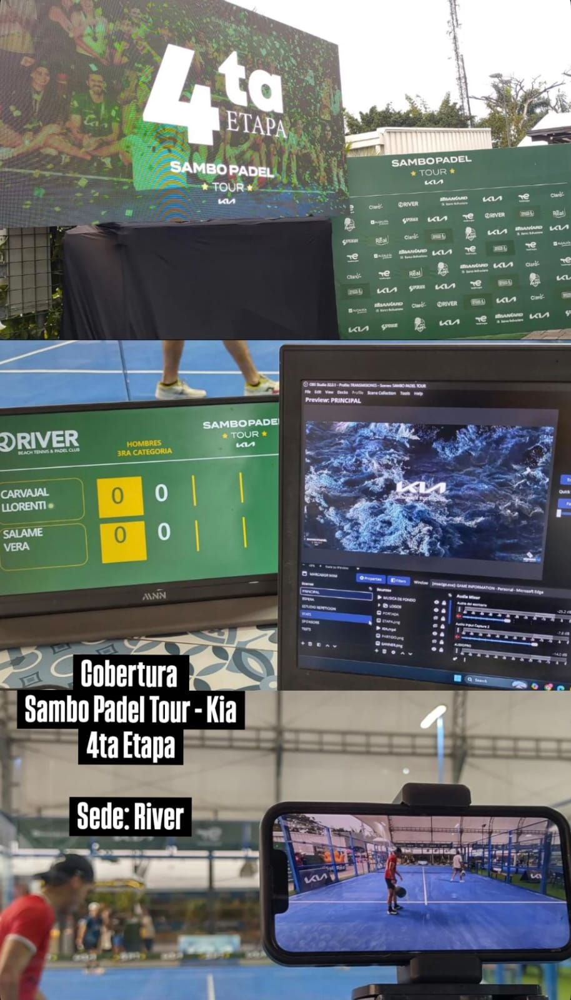

Sports Event Streaming - Show593

Overview
Audiovisual production and live streaming of padel tournaments.
My role
- General coordination and audiovisual production.
- Installing and supporting equipment.
- Supporting web services.
- Coordination with event organizers to plan and manage the audiovisual and technical resources required for live broadcasts.
What I learned
This project began as an initiative connected to a padel league, at a time when the sport was still gaining popularity in the city of Guayaquil and was viewed more as a recreational activity than as a high-level competitive discipline.
My team developed an audiovisual solution that connected players and tournament
organizers with an audience that eventually became a true family.
Our purpose goes beyond broadcasting matches: we aim to bring people closer together
through sports, allowing family members, friends, and fans from different cities across the country
and even from around the world to enjoy live broadcasts from the comfort of their homes.
This gives them the opportunity to support their loved ones and favorite players as
they achieve new milestones and improve their competitive performance.
My role is to turn every broadcast into a meaningful experience that connects people,
evokes emotions, and creates lasting memories.
At the same time, our productions provide valuable exposure for sponsoring brands
by strategically integrating advertising placements and brand activations
throughout each tournament.
At Show593, we believe every event deserves to be experienced and remembered,
even from a distance. Whether you are organizing a padel tournament or another type of event,
our team can help you bring it to life through live streaming, expanding your audience,
increasing sponsor visibility, and sharing meaningful moments with those who cannot be there in person.